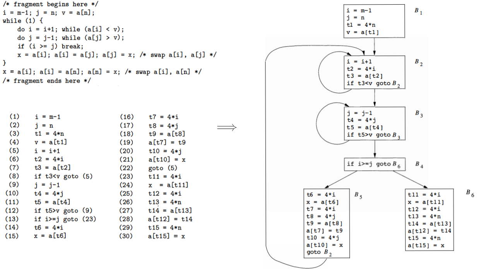

2. machine-independent
optimizations (1)
1. 机器无关优化概述
- 机器无关优化: 针对中间代码
- 机器相关优化: 针对目标代码
局部的机器无关优化之前已讨论过，这里考虑涉及多个基本块的全局代码优化。
下面将用到的例子。

2. 优化的分类
(1). 删除公共子表达式
如果表达式 $\small E:$ $\sf x\ op\ y$ 先前已被计算过，并且从先前的计算到现在，$\sf x\ op\ y$ 中变量值没有改变，那么 $\sf x\ op\ y$ 的这次出现就称为公共子表达式 (
如果 $\small E$ 的上一次计算被赋予 $\sf x$，且 $\sf x$ 的值在中间没有改变，那么就可以删除 $\small E$ 的此次出现，并替换为对 $\sf x$ 的引用。
e.g.2-1 依次对 $\small B_5$ 和 $\small B_6$ 删除公共子表达式:
$\small B_5:$ $ \boxed{\begin{aligned} &\sf t6=4*i \\ &\sf x=a[t6] \\ &\sf t7=4*i \\ &\sf t8=4*j \\ &\sf t9=a[t8] \\ &\sf a[t7]=t9 \\ &\sf t10=4*j \\ &\sf a[t10]=x \\ &\sf goto\ B_2 \end{aligned}} $ $\overset{1}{\Longrightarrow}$ $ \boxed{\begin{aligned} &\sf x=a[t2] \\ &\sf t9=a[t4] \\ &\sf a[t2]=t9 \\ &\sf a[t4]=x \\ &\sf goto\ B_2 \end{aligned}} $ $\overset{2}{\Longrightarrow}$ $ \boxed{\begin{aligned} &\sf x=t3 \\ &\sf a[t2]=t5 \\ &\sf a[t4]=x \\ &\sf goto\ B_2 \end{aligned}} $ $\small B_6:$ $ \boxed{\begin{aligned} &\sf t11=4*i \\ &\sf x=a[t11] \\ &\sf t12=4*i \\ &\sf t13=4*n \\ &\sf t14=a[t13] \\ &\sf a[t12]=t14 \\ &\sf t15=4*n \\ &\sf a[t15]=x \end{aligned}} $ $\overset{3}{\Longrightarrow}$ $ \boxed{\begin{aligned} &\sf x=a[t2] \\ &\sf t14=a[t1] \\ &\sf a[t2]=t14 \\ &\sf a[t1]=x \end{aligned}} $ $\overset{4}{\Longrightarrow}$ $ \boxed{\begin{aligned} &\sf x=t3 \\ &\sf t14=a[t1] \\ &\sf a[t2]=t14 \\ &\sf a[t1]=x \end{aligned}} $
- $\small 1、3$：删除局部子表达式和 $\small 2$ 个全局子表达式，同时删除了部分无用代码
- $\small 2、4$：删除数组引用对应的全局子表达式
- 在 $\small 4$ 中，由于 $\small B_1$ 的 $\sf v=a[t1]$ 出现在循环之前，且 $\small B_5$ 中存在对数组的赋值，因此此处的 $\sf a[t1]$ 不能作为公共子表达式
(2). 删除无用代码
- 无用代码 (
dead code ): 计算结果永远不会被使用的语句； - 复制传播 (
copy propagation ): 在复制语句 $\sf x=y$ 后尽可能地用 $\sf y$ 代替对 $\sf x$ 的引用 - 常用的公共子表达式消除算法和其它一些优化算法会引入一些复制语句
- 复制传播为消除无用代码创造机会
e.g.2-2 (续2-1 ) 依次对 $\small B_5$ 和 $\small B_6$ 删除无用代码:
$\small B_5:$ $ \boxed{\begin{aligned} &\sf x=t3 \\ &\sf a[t2]=t5 \\ &\sf a[t4]=x \\ &\sf goto\ B_2 \end{aligned}} $ $\overset{1}{\Longrightarrow}$ $ \boxed{\begin{aligned} &\sf x=t3 \\ &\sf a[t2]=t5 \\ &\sf a[t4]=t3 \\ &\sf goto\ B_2 \end{aligned}} $ $\overset{2}{\Longrightarrow}$ $ \boxed{\begin{aligned} &\sf a[t2]=t5 \\ &\sf a[t4]=t3 \\ &\sf goto\ B_2 \end{aligned}} $ $\small B_6:$ $ \boxed{\begin{aligned} &\sf x=t3 \\ &\sf t14=a[t1] \\ &\sf a[t2]=t14 \\ &\sf a[t1]=x \end{aligned}} $ $\overset{3}{\Longrightarrow}$ $ \boxed{\begin{aligned} &\sf x=t3 \\ &\sf t14=a[t1] \\ &\sf a[t2]=t14 \\ &\sf a[t1]=t3 \end{aligned}} $ $\overset{4}{\Longrightarrow}$ $ \boxed{\begin{aligned} &\sf t14=a[t1] \\ &\sf a[t2]=t14 \\ &\sf a[t1]=t3 \end{aligned}} $
- $\small 1、3$：复制传播
- $\small 2、4$：其他基本块没有对 $\sf x$ 的引用，因此将其删除
(3). 常量合并
常量合并 (
e.g.2-3 以计算圆的周长为例，执行常量合并:
$\enspace$ $ \boxed{\begin{aligned} &\sf t1=2*3.14 \\ &\sf t2=t1*r \\ &\sf l=t2 \end{aligned}} $ $\overset{}{\Longrightarrow}$ $ \boxed{\begin{aligned} &\sf t2=6.28*r \\ &\sf l=t2 \end{aligned}} $
(4). 代码移动
- 循环不变计算 (
loop-invariant computation ): 不管循环执行多少次都得到相同结果的表达式 - 代码移动 (
code motion ): 尽可能地移动循环内的代码到外面，减小时间代价
e.g.2-4 以计算扇形面积为例，执行代码移动:
$\enspace$ $ \boxed{\begin{aligned} &\sf for\ (i=1;i< 10;++i)\ \{\\ &\sf\quad for\ (n=1;n< 360/(5*i);++n)\ \{\\ &\sf\qquad S=(5*i)/360*pi*r*r*n; \\ &\}\} \end{aligned}} $ $\overset{}{\Longrightarrow}$ $ \boxed{\begin{aligned} &\sf C1=5/360*pi*r*r*n; \\ &\sf for\ (i=1;i< 10;++i)\ \{\\ &\sf\quad C2=i*C1; \\ &\sf\quad for\ (n=1;n< 360/(5*i);++n)\ \{\\ &\sf\qquad S=C2*n; \\ &\}\} \end{aligned}} $需要注意循环不变计算的相对性。
(5). 强度削弱
- 强度削弱 (
strength reduction ): 用较快的操作代替较慢的操作，如用加代替乘、乘代替除 - $\sf 2*x\Rightarrow x+x;\quad x/2\Rightarrow x*0.5$
- $\sf a_nx^n+a_{n-1}x^{n-1}+...+a_1x+a_0\Rightarrow ((...(a_nx+a_{n-1})x+a_{n-2})...)x+a_1x)+a_0$
e.g.2-5 (续2-2 ) 执行强度削弱:
$\small B_1:$ $ \boxed{\begin{aligned} &\sf i=m-1 \\ &\sf j=n\\ &\sf t1=4*n\\ &\sf v=a[t1]\\ &\sf t2=4*i \\ &\sf t4=4*j \end{aligned}} $ $\overset{}{\Longrightarrow}$ $ \boxed{\begin{aligned} &\sf i=i+1 \\ &\sf t2=4*i\\ &\sf t3=a[t2]\\ &\sf if\ t3< v\ goto\ B_2 \end{aligned}} $ $\quad\small B_2:$ $ \boxed{\begin{aligned} &\sf i=i+1 \\ &\sf t2=4*i\\ &\sf t3=a[t2]\\ &\sf if\ t3< v\ goto\ B_2 \end{aligned}} $ $\overset{}{\Longrightarrow}$ $ \boxed{\begin{aligned} &\sf i=i+1 \\ &\sf t2=t2+4\\ &\sf t3=a[t2]\\ &\sf if\ t3< v\ goto\ B_2 \end{aligned}} $削弱了两个归纳变量的强度，并在 $\small B_1$ 中为其赋初值
$ \mskip{137px}\small B_3:$ $ \boxed{\begin{aligned} &\sf j=j-1 \\ &\sf t4=4*j\\ &\sf t5=a[t4]\\ &\sf if\ t5> v\ goto\ B_3 \end{aligned}} $ $\overset{}{\Longrightarrow}$ $ \boxed{\begin{aligned} &\sf j=j-1 \\ &\sf t4=t4-4\\ &\sf t5=a[t4]\\ &\sf if\ t5> v\ goto\ B_3 \end{aligned}} $
(6). 删除归纳变量
- 归纳变量 (
induction variable ): 循环中的某个变量，每次被赋值是总是增加或减少一个常数 - 循环中若有一组归纳变量的值的变化保持步调一致，常常可以将这组变量删除为只剩一个
e.g.2-6 (续2-5 ) 删除归纳变量:
$\small B_2:$ $ \boxed{\begin{aligned} &\sf i=i+1 \\ &\sf t2=t2+4\\ &\sf t3=a[t2]\\ &\sf if\ t3< v\ goto\ B_2 \end{aligned}} $ $\overset{}{\Longrightarrow}$ $ \boxed{\begin{aligned} &\sf t2=t2+4\\ &\sf t3=a[t2]\\ &\sf if\ t3< v\ goto\ B_2 \end{aligned}} $ $\small B_3:$ $ \boxed{\begin{aligned} &\sf j=j-1 \\ &\sf t4=t4-4\\ &\sf t5=a[t4]\\ &\sf if\ t5> v\ goto\ B_3 \end{aligned}} $ $\overset{}{\Longrightarrow}$ $ \boxed{\begin{aligned} &\sf t4=t4-4\\ &\sf t5=a[t4]\\ &\sf if\ t5> v\ goto\ B_3 \end{aligned}} $$\sf i$ 和 $\sf t2$、$\sf j$ 和 $\sf t4$ 分别步调一致，因此用 $\sf t2、t4$ 替换 $\small B_4$ 中对 $\sf i、j$ 的引用，然后删除无用代码。
$\small B_4:$ $ \boxed{\begin{aligned} &\sf if\ i>=j\ goto\ B_6 \end{aligned}} $ $\overset{}{\Longrightarrow}$ $ \boxed{\begin{aligned} &\sf if\ t2>=t4\ goto\ B_6 \end{aligned}} $